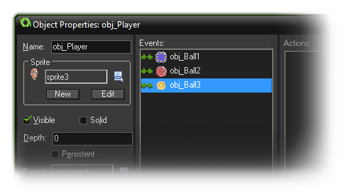
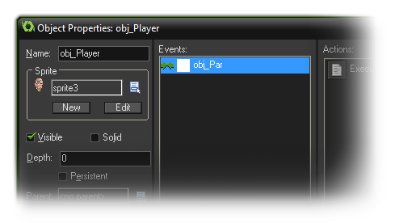

Parents 父对象
父对象是层次结构的一部分，将多个子对象组在一起。Parents are objects that form part of a hierarchy, grouping multiple "child" objects together.
在对象属性中最强大的一个选项是指定一个父对象。游戏中每个对象都可以有一个父对象，这意味着什么呢？请看，当一个对象有父对象时，它能和父对象分享代码、动作和事件。这是所谓的“继承”，而拥有父对象的对象称为子对象。但这还不够！你还能在父对象上检测和运行代码，这将自动的执行到子对象上，给你节省了很多时间和精力。另外，还可以把父对象看作一种将对象在同样的伞下面“组合”在一起的方式，让它们在不失去自身身份的同时分享一些特定的东西。现在看起来有点复杂，让我们举一些例子。
One of the most powerful options within the object properties is the ability to assign a parent. Every object in the game can have a parent object, but what does this mean? Well, when an object has a parent, it can share code, actions and events with that parent. This is called "inheritance" and an object that has a parent is called a "child". But that's not all! You can also do checks and run code on parent objects which automatically include the child objects too which saves a lot of time and energy. Another way to look at a parent object is as a way to "group" objects together under the same umbrella and have them share certain things without loosing their own identity. Now, this may seem a bit complicated to understand so let's give some examples :
假设你有一个玩家和四个不同的敌人。现在你想让玩家在碰到四个敌人对象时都会死亡，通常需要为四个对象都设置碰撞事件的动作或代码。但是，如果你为所有的敌人制作一个父对象，然后我们只要为父对象创建一个碰撞事件，不管是哪个“子”敌人对象碰撞到玩家都会触发碰撞事件。得心应手的技巧！实际的游戏制中，GMS对象会是如下的情况：
Say you have a player object and four different enemy objects. Now, you want the player to die if he touches any of these four objects and this would normally entail four collision events with four sets of actions or code, one for each of the enemy objects. BUT if we make a parent object for all the enemies, then we can create one collision event with the parent object only and it will trigger no matter which one of the four "child" enemy objects touch the player. Handy stuff! In the actual GameMaker:Studio object you would see something like this :

另外一个例子是，如果你的游戏要创建十个不同的对象，他们有着相同的行为方式。那么你可以创建一个父对象，设计所有的行为动作或代码，然后创建十个没有动作或代码的对象，但是它们的精灵图像不同，之后再将他们都指定到你的父对象上。当你把它们放置在房间里时，它们的行为都一样，但样子看起来不同。
Another example would be if you have a game where you want to create 10 different objects and have them behave in the same way. Well you would create one parent object and in that have all your behaviour actions or code, and then you would create your ten objects with no actions or code, but different sprites, and assign them your parent object. Now, when you place these instances in a room they will all behave the same, but look different.
最后，你可以使用这种父子关系来“混搭”事件和行为。假设你有两个怪物：一个上下移动，而另一个左右移动，但你想要他们两个都有相同的HP和向玩家射击的技能。这种情况下，你可以看到几乎所有的事件应该都有相同的行为动作，除了个别的一、两个支配运动。所以再次，我们给其它对象制作一个父对象，但是这个情况还需要给子对象定义特别的事件，这些事件覆盖父对象的事件，这意味着不管子对象的一个事件里是否包含动作，他们都会执行，以代替父对象中事件中包含的动作。如果你仍然想要运行父事件，可以使用相应的操作或代码调用所谓的“继承”事件。
Finally you can use parenting to "mix and match" events and behaviours. Say you want two monsters : one that moves up and down, while another that move left and right, but you also want the two of them to have the same health and shoot at the player. In this case you can see that almost all events should have the same actions except for one or two that govern movement. So, again, we can make one object the parent of the other, but in this case we also define certain events for the child object. These events "override" the parent events, meaning that whenever an event for the child object contains actions, these are executed instead of the actions contained in the event of the parent. If you also want to execute the parent event you can call the so-called "inherited" event using the appropriate action or code.
如上所述，无论是否使用了父对象，还有一情况也意味着后代（或子代）。比如这种情况发生时，当有一个动作时，就表示这个动作必须应用到一个特定对象的实例上。还有就是，当你在代码中使用 with() 表达式（手册后面会讲到），调用代代码函数如instance_position，instance_number等等也会正常工作。最后，当你引用其它对象的变量也是一样，就像上面的怪物的例子，如果我设置怪物1的速度为10，然后怪物2的速度也会变为10，因为它是怪物1的子对象。
As indicated, wherever you use a parent object, this also implies the descendants (or "children"). This happens when, in an action, you indicate that the action must be applied to instances of a certain object. It also happens when you use the with() statement in code (see further on in the manual), and it works when you call code functions like instance_position, instance_number, etc... Finally, it works when you refer to variables in other objects too, like, in the above monster example, if I set the monster 1 speed to 10, then the monster 2 speed will also go to ten as it is a child object of monster 1.
大多数情况下，下面的方式会是一个很好的做法。创建一个基本的父对象，这个对象包括所有默认的行为，但不直接在游戏中作为对象实例使用。而不是全部使用子对象或者仅仅是我上面概述的那些。你应该了意识到父对象也会有父对象。显然，你不会创建一个圈如“1是2的子对象，2又是1的子对象”，但是你可以创建一个“对象层次”一类的东西，比如“1是2的子对象，2是3的子对象”。对于保证你的游戏机构，这非常有用，建议学习好这种机制。
It is actually good practice in most cases to create one base parent object and have this base object contain all the default behavior but never use it in the game. Rather use all the children objects and only use the parent in situations like those I have outlined above. You should also realise that parents can have parents too! Obviously you can't create a cycle of "parent1 is child of parent 2 is child of parent 1" but you can create what is called "object hierarchy" where "parent1 is child of parent2 is child of parent3". This is extremely useful to keep your game structured and you are strongly advised to learn to use this mechanism.
现在，你应该明白为什么父子对象设计真的可以节省很多时间和工作，并且为什么是GMS中一个最为有用的工具了。所以花点时间理解这个功能，它会一直帮助到你。
Now you can see why parenting can really save a lot of time and work, and why it is one of the most useful tools in the GameMaker arsenal. So take your time to get to know this function as it will really help you in the long run!
-断水-